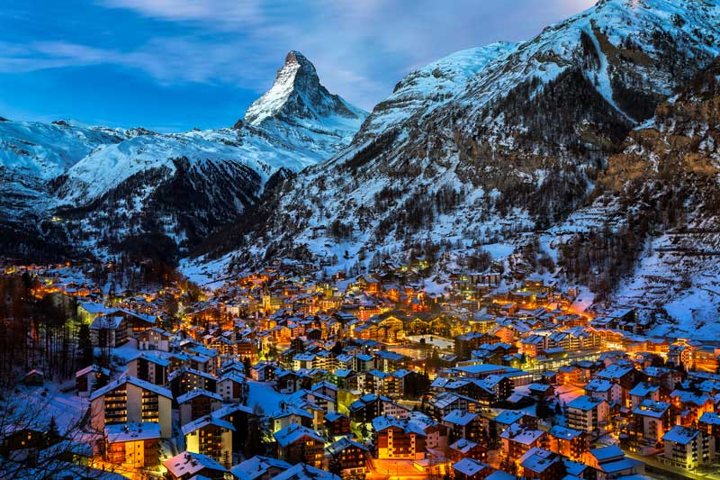
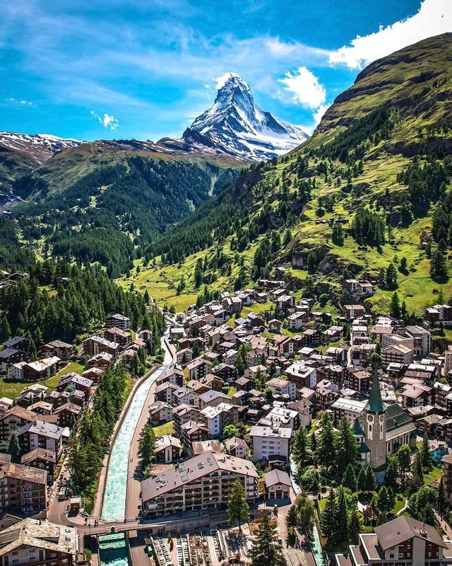
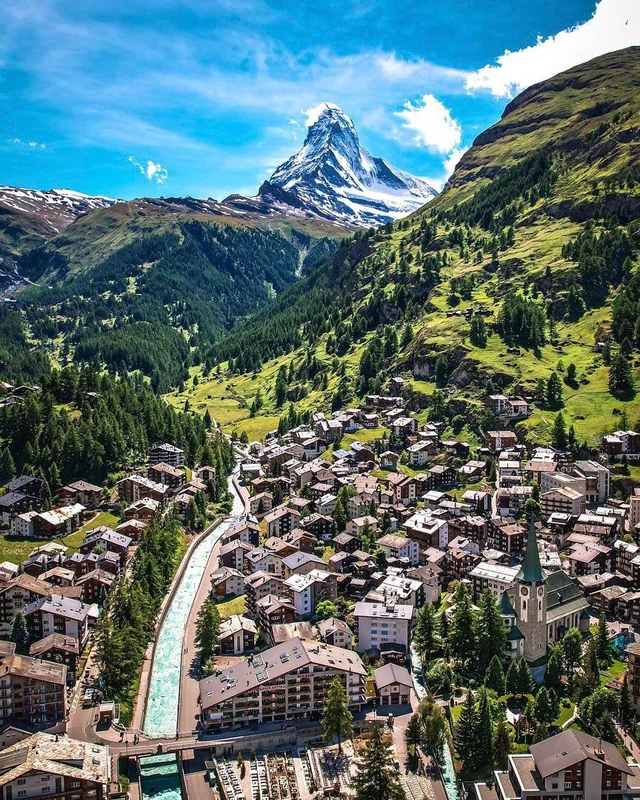
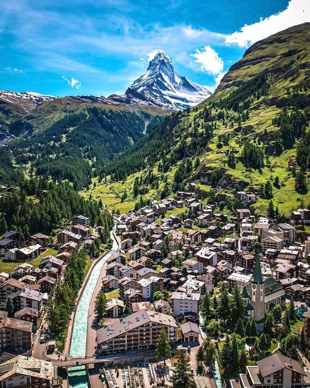
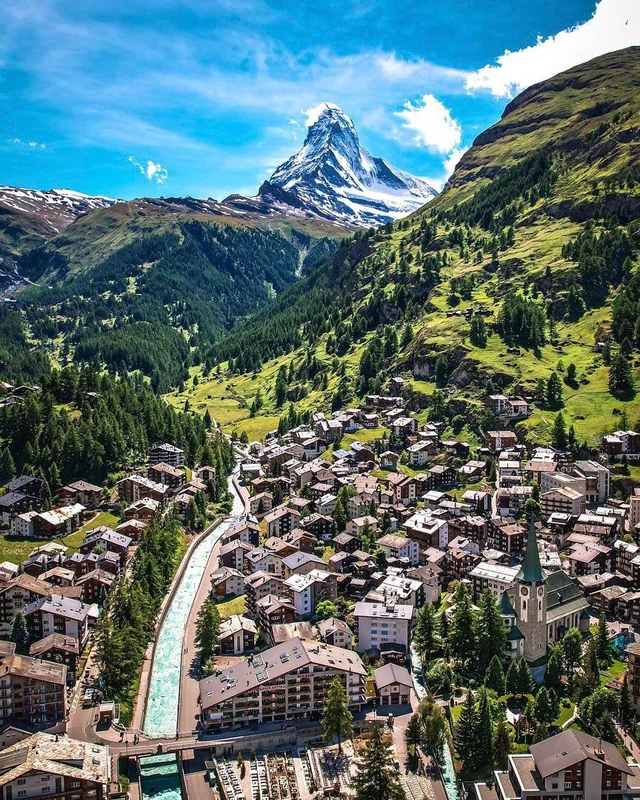

Gallery:

 


Zermatt is known throughout the world for its skiing, especially Triftji for its moguls. The high altitude results in consistent skiing continuously throughout the summer. Skiing in Zermatt is split up into four areas: Sunnegga, Gornergrat, Klein Matterhorn and Schwarzsee.

"Such a fun trip! This is the most beautiful city I have been to. The guides were fantastic"
"I had the best time exploring the city and being able to learn more about their culture and food"